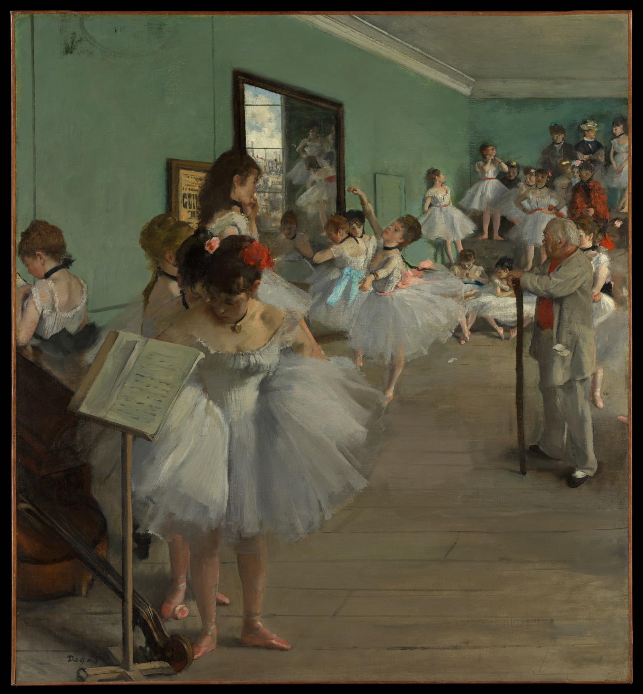

PLANO 01
La luz entra primero.
El encuadre amplio abre la pieza; el corte llega cuando el ojo ya leyó el espacio.
PLANO 02
Después, el detalle.
El segundo plano cierra la escala y sostiene el ritmo sin añadir adornos.
PLANO 03
Y el pulso.
El cierre vuelve al gesto: una sola línea y el tiempo justo.